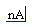
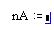
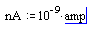

Defining a Unit |
| Defining a Unit in a Worksheet |
Although Mathcad provides a collection of built-in units, you may want to define your own. To define a typical multiplicative unit:
Type the name of the unit you want to define - in this example, nanoamperes.

Press [:] to insert the definition symbol, :=. A placeholder appears.

In the placeholder, define your new unit.

Mathcad can also use "unit functions" to associate a quantity with a value, or to scale the value. When defining a value, the function is applied, and when scaling a result, the inverse function is applied. The temperature units °C and °F are defined this way.
You can define your own unit function pairs. For example, you may wish to use the decibel scale and make use of dB like other unit names. To define a unit scaling function:
Type the name of the unit function you want to define, followed by (x) - in this example, dB.
dB(x)
Press [:] to insert the definition symbol, :=. A placeholder appears.
In the placeholder, define your function.
dB(x):=10x/20
Define an inverse function following the same steps, but precede the function name with /.
/dB(x):= 20·log(x)
The function name is used to define variables using the postfix operator. The inverse function is used when you type the name, without the slash, in the units placeholder. You can get the / character in a math region either by typing in a special keystroke mode, or using the Custom Characters toolbar.
| Defining Custom Built-In Units |
There may be cases where a unit is so common in your organization's work that you want to make a new built-in unit. You can add built-in units to any of Mathcad's unit systems. These units are then understood in any Mathcad worksheet opened in a copy of Mathcad that has the modified files.
You must edit several of Mathcad's operating files to add unit definitions. Warning: as with all changes that may affect your ability to run Mathcad, we recommend making copies of files before you change them. Typos and syntax errors in these files will cause Mathcad to stop functioning.
Edit the XML and MPL unit files in your Mathcad installation directory. For example, to add a unit to the SI unit system, edit
The first file contains the unit symbols and quantities required for the Insert Unit dialog box. The second file contains the actual definition of the unit. So, for example, to add the unit mJ, millijoule, do the following:
mc_mJ = rv(milli joule);
As with the XML file, it is easiest to copy and paste an existing example of syntax and edit appropriately. Entries in the MPL file are alphabetized by symbol. All entries in this file are based on existing units. The SI prefixes are defined, and may be used without a multiplication symbol. For more elaborate values, you may wish to add the value to the mcdunits.mpl file in the same directory. Follow the syntax and existing definitions in this file for performing multiplications and divisions.
mJ = 1 × 10-3 J